The code used in this tutorial is borrowed from: https://www.earder.com/tutorials/timeseries-with-geoserver-and-openlayers/
Plug to http://nhuthehoang.com/ for telling me about GCP and Geoserver.
Part 2: https://www.davidjleifer.com/blogs/part2.html
Part 3: https://www.davidjleifer.com/blogs/part3.html
Part 4: https://www.davidjleifer.com/blogs/part4.html
Part 5: https://www.davidjleifer.com/blogs/part5.html
Part 6: https://www.davidjleifer.com/blogs/part6.html
Part 7: https://www.davidjleifer.com/blogs/part7.html
Part 8: https://www.davidjleifer.com/blogs/part8.html
Part 9: https://www.davidjleifer.com/blogs/part9.html
Part 10: https://www.davidjleifer.com/blogs/part10.html
Part 11: https://www.davidjleifer.com/blogs/part11.html
Part 12: https://www.davidjleifer.com/blogs/part12.html
Part 13: https://www.davidjleifer.com/blogs/part13.html
Today we will walk through the steps necessary to set up our own Linux Ubuntu server on Google Cloud Platform (GCP). After that we will install Java (OpenJDK version 1.8.0_252). Then Tomcat8 for our servlet container. Within Tomcat8 we will install our Geoserver.war file. We will configure our Geoserver installation to allow the upload of a timeseries of precipitation for the state of Oregon using the Image Mosaic plugin. Finally, this WMS will be added to an HTML/CSS/JS file and hosted in Geoserver’s www folder.
Go to this link: https://cloud.google.com/
Press the “Get started for free” button. Agree to the terms of service and hit the “Continue” button. On the next page, set the “Account Type” to “Individual” and fill out the “Name and address” section. Below that, set “Payment method” to an active credit or debit card and hit the button called “START MY FREE TRIAL”. This will start charging our account after 300 credits over a year, what we are doing will take about 10–15 credits.
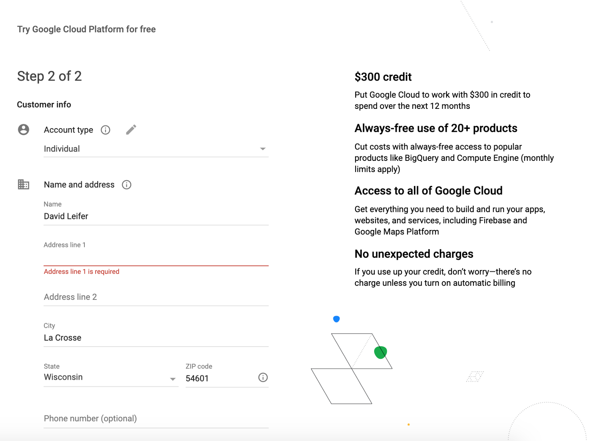
Select the “Skip” button and on the next page click “GO TO COMPUTE ENGINE”. Wait for compute engine to setup. On “VM Instances” click “Create”. This will bring us to the following page, where you will click “Change” under “Boot disc”.
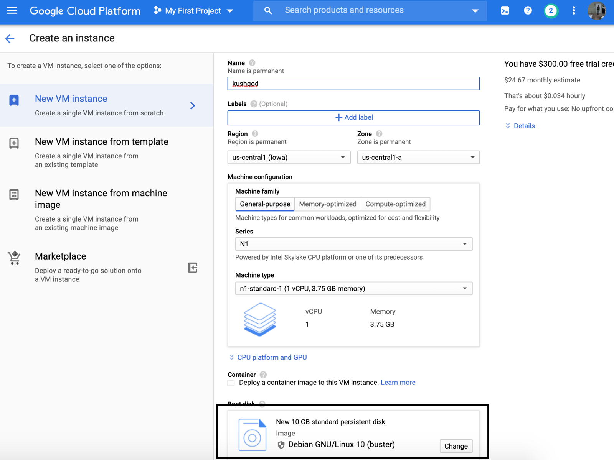
On the next page, click the“Operating system” button and choose “Ubuntu”. Hit the “Select” button. In the “Firewall” section, select “Allow HTTP traffic”. Then click “Create” on the bottom of the next page.
Next, go to Firewall rules by hitting the menu in the top left hand portion of the screen:
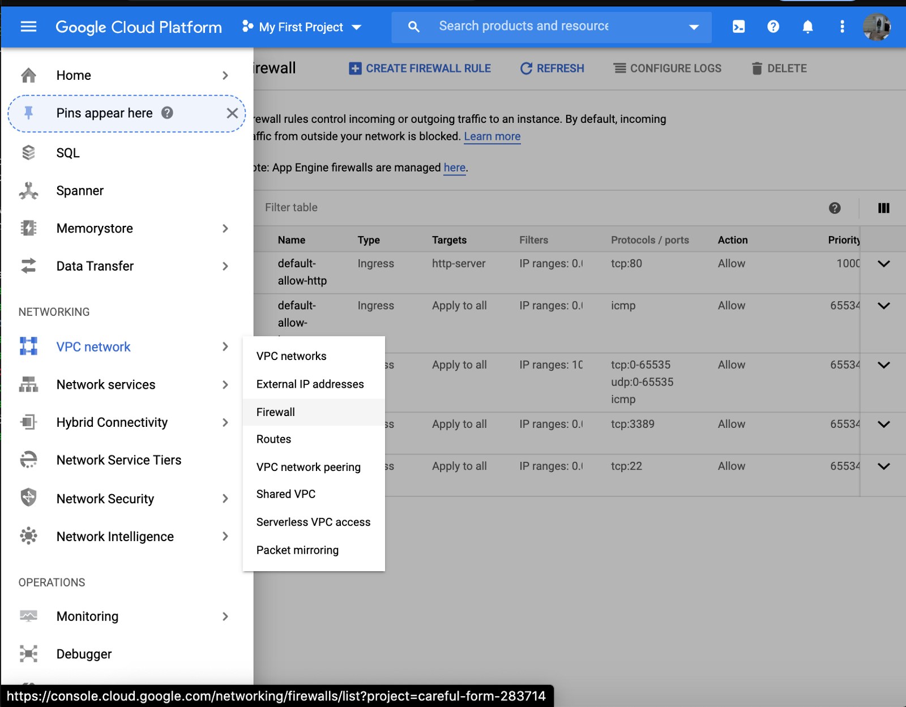
Click “CREATE FIREWALL RULE” then fill out the Name section
with “default-allow-http-v2”. For “Targets”, select “All
instances in the network”. Under “Source IP ranges”, enter
0.0.0.0/0 to allow traffic from all sources. From
“Protocols and ports” enter tcp:8080. Under
“Protocols and ports” select “Allow all”. Hit “Create” to
enable firewall rule.
Now we have a Ubuntu instance! Click the SSH button on the right side of the page to bring up the Ubuntu terminal:
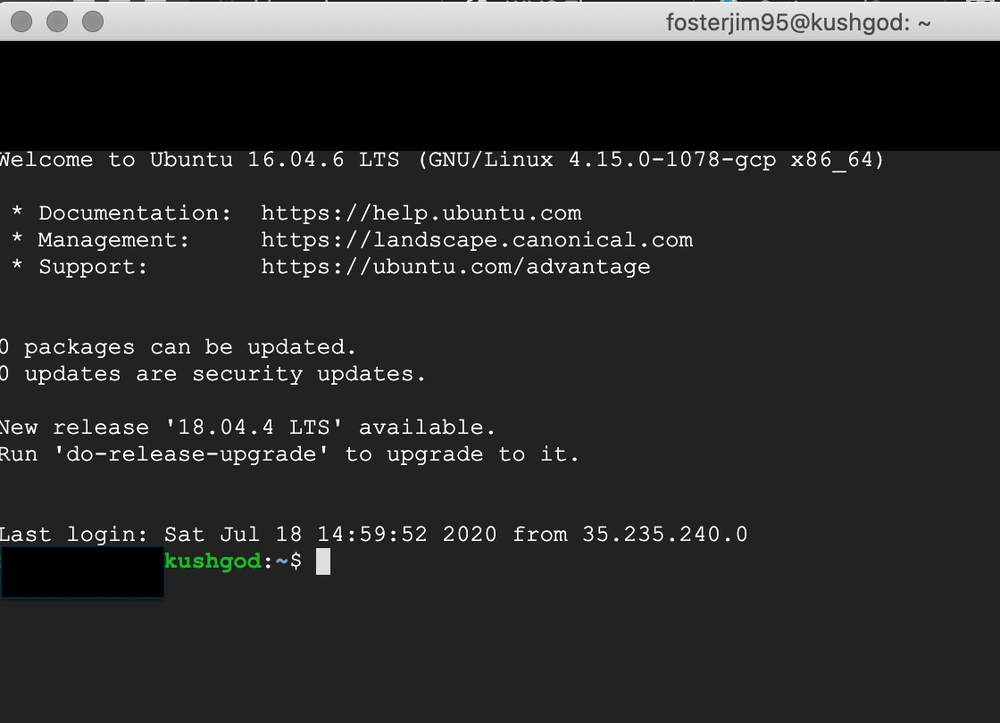
Run the following command and type yes to install Java:
sudo apt updatesudo apt install openjdk-8-jdk
Now check to see if it was installed with this command:
java -versionWe should see this:
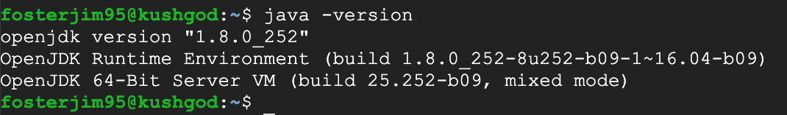
Almost forgot, at the GCP console click the “ACTIVATE” button and “Upgrade” to get full access to the site. You will have to reload the page and reconnect via SSH:
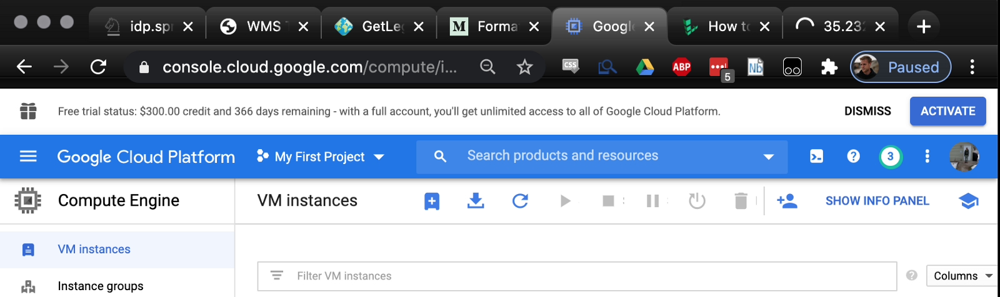
To install “tomcat8”, hit ’em with that:
sudo apt-get install tomcat8sudo apt-get install tomcat8-docs tomcat8-examples tomcat8-admin
If you want to start, stop, or restart the servlet container, use:
sudo systemctl start tomcat8sudo systemctl stop tomcat8sudo systemctl restart tomcat8
To use the GUI, open up “tomcat-users.xml” with this command:
sudo nano /var/lib/tomcat8/conf/tomcat-users.xml
Add the following lines replacing “password” with your password and “username” with your username:
<role rolename="manager-gui"/> <role rolename="admin-gui"/> <user username="username" password="password" roles="manager-gui,admin-gui"/>
Save the file and restart tomcat8:
sudo systemctl restart tomcat8Now we can point our browser to the external ip (yours will be different) of our GCP Linux VM at port 8080:
http://XX.xxx.XXX.XXX:8080/
You should see a page in your browser like this:
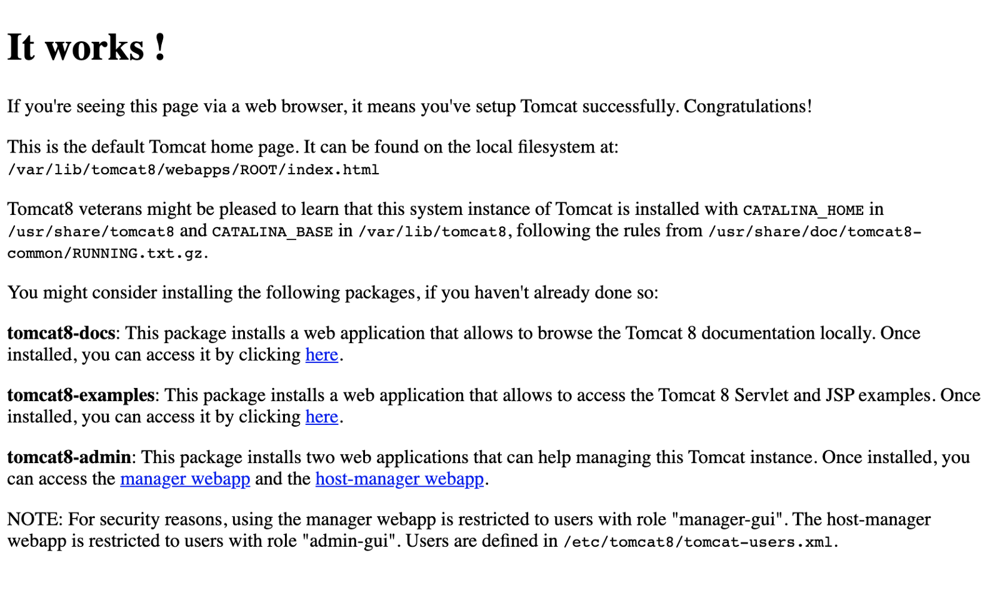
To install the Geoserver.war package, navigate to the “webapps” folder within your “tomcat8” installation with this command:
cd /var/lib/tomcat8/webapps
Next, download the latest Geoserver.war, which is a zipped file:
sudo wget https://sourceforge.net/projects/geoserver/files/GeoServer/2.17.1/geoserver-2.17.1-war.zip/download
Now we need to install the “unzip” utility:
sudo apt-get install unzip
Then to unzip the package:
sudo unzip download
Then make the .war executable by entering:
sudo chmod +x /var/lib/tomcat8/webapps/geoserver.war
Finally, restart “tomcat8”:
sudo service tomcat8 restart
Point your browser at the following address:
http://XX.xxx.XXX.XXX:8080/geoserver/web/
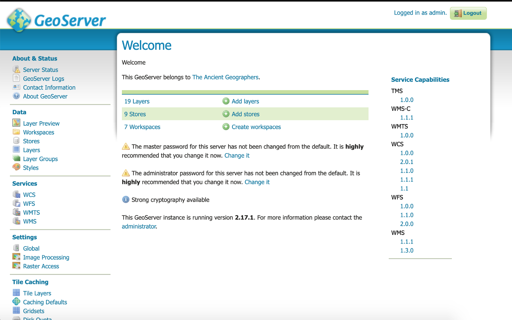
The default behavior of Geoserver is to set user to “admin” and password to “geoserver” but you can change it by following these instructions: https://docs.boundlessgeo.com/bse/latest/sysadmin/security/adminpwd.html#:~:text=Boundless%20Server%20Enterprise.-,Changing%20the%20admin%20password,Click%20Change%20it.
Now we need to configure the servlet container (tomcat8) to allow timeseries data to be uploaded onto Geoserver. To do this, navigate to the following directory:
cd /usr/share/tomcat8/bin/
We need to make a script file:
sudo touch setenv.sh
Open the file with the following:
sudo nano setenv.sh
Add the following Java methods to this file:
export JAVA_OPTS="$JAVA_OPTS -Duser.timezone=GMT" export JAVA_OPTS="$JAVA_OPTS -Dorg.geotools.shapefile.datetime=true"
Exit the file and make the script executable, then run the script:
sudo chmod +x setenv.sh ./setenv.sh
Now restart tomcat8:
sudo service tomcat8 restart
Check to see if the changes took place by entering the following:
ps aux | grep java
The output should look something like this:
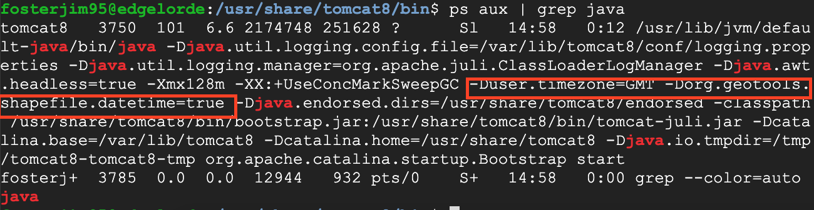
Now we need to get data onto the server and change permissions on that folder to upload onto Geoserver. Navigate to the “data” folder and make a directory to host our files:
cd /var/lib/tomcat8/webapps/geoserver/data/data sudo mkdir timeseries cd timeseries
Now we will download 6 files into the data folder with wget. There are two .properties files and four geotiffs. The two .properties files look like this:
timeregex.properties
regex=[0-9]{8}indexer.properties
TimeAttribute=ingestion ElevationAttribute=elevation Schema=*the_geom:Polygon,location:String,ingestion:java.util.Date,elevation:Integer PropertyCollectors=TimestampFileNameExtractorSPI[timeregex](ingestion)
Use wget to download the files. You can upload your own files to Google Drive and download them by making the link setting “Anyone with the link” under “Get shareable link”. This is only one way to get data onto a server and honestly exposes the data to anyone with the link, the recommended way is to SSH from the computer with the files onto the Linux terminal. This is complicated, involves keys, and is generally a huge pain the ass. Replace the two “id” sections in the following command with the “id” that can be found in your Google Drive’s shareable link:
wget --load-cookies /tmp/cookies.txt "https://docs.google.com/uc?export=download&confirm=$(wget --quiet --save-cookies /tmp/cookies.txt --keep-session-cookies --no-check-certificate 'https://docs.google.com/uc?export=download&id=1xJ0za-_6tLYCoR_OR6nEz6eMIAvKpURD' -O- | sed -rn 's/.*confirm=([0-9A-Za-z_]+).*/\1\n/p')&id=1xJ0za-_6tLYCoR_OR6nEz6eMIAvKpURD" -O timeseries_oregon_html && rm -rf /tmp/cookies.txt
Unzip the file with unzip:
sudo unzip timeseries_oregon_html
Change permissions on the data folder:
sudo chmod -R ugo+rw /var/lib/tomcat8/webapps/geoserver/data/data/timeseries
Clean up some files:
rm -R __MACOSX rm timeseries_oregon_html ls
Directory should look like this:
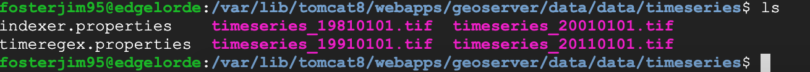
Under “Data” on the left hand side of the screen go to “Stores”. Click “Add new stores”. This will bring you to this screen:
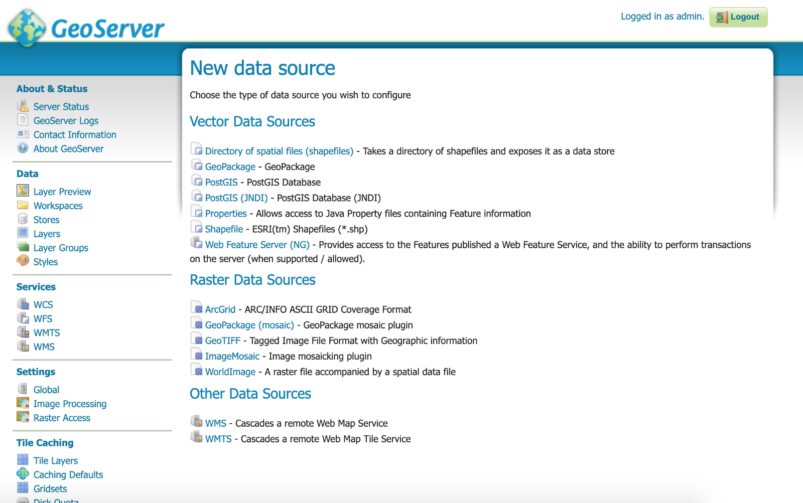
Hit “ImageMosaic”. Click “Browse”. Navigate to the folder you put the data in (data/timeseries) and click “OK”:
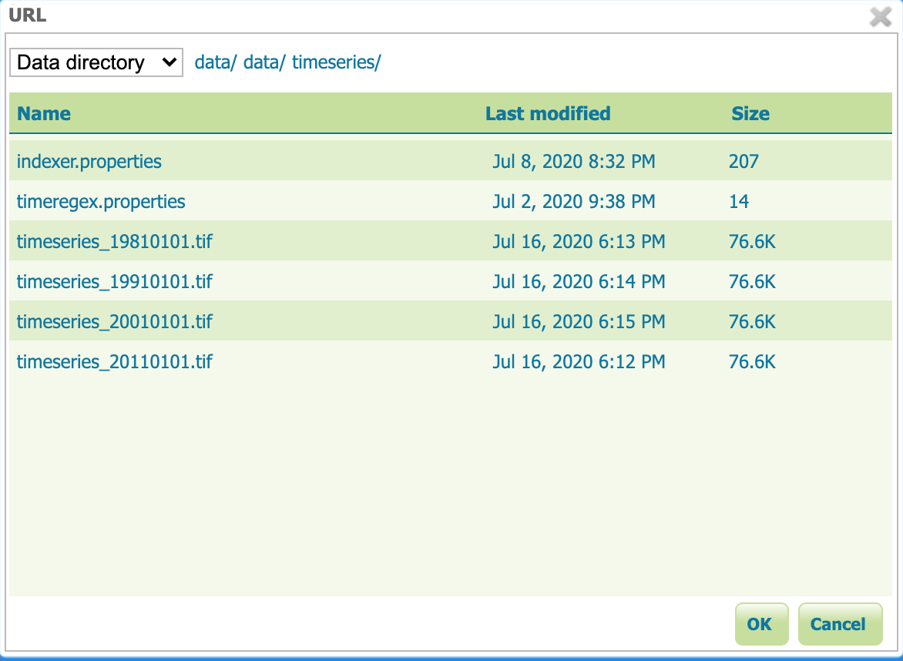
Fill out “Data Source Name” and “Description” then click save:
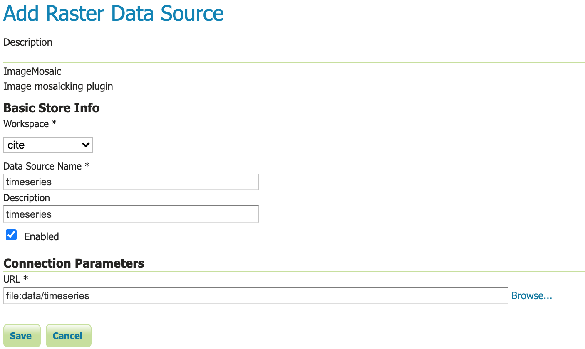
Click “Publish” on the next screen. Click “Dimensions” and enable “Time”. “Presentation” should be set to “List”. Then click “Save”. If it worked, you can go to “Layer Preview” and click “timeseries”. Should look like this:
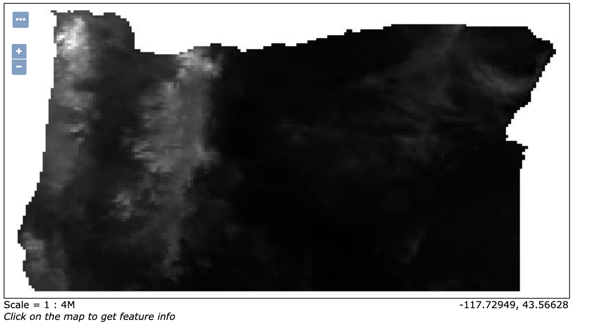
Final step (for now). Navigate to the www folder with this command:
cd /var/lib/tomcat8/webapps/geoserver/data/www
Create a file name oregon.html
sudo touch oregon.html
Open it:
sudo nano oregon.html
Copy this code in there! You need to modify the ip address with your external ip address. Again, this can be found on the VM page of your Compute Engine on GCP.
<!DOCTYPE html>
<html>
<head>
<title>WMS Time</title>
<link rel="stylesheet" href="https://openlayers.org/en/v4.6.5/css/ol.css" type="text/css">
<script src="https://openlayers.org/en/v4.6.5/build/ol.js"></script>
<style>
/* Setting up the slider styling */
.slidecontainer {
width: 120px;
margin-top: -30px;
margin-left: 10px;
z-index: 100px;
}
.slider {
-webkit-appearance: none;
width: 100%;
height: 15px;
border-radius: 5px;
background: #d3d3d3;
outline: none;
opacity: 0.7;
-webkit-transition: .2s;
transition: opacity .2s;
}
.slider::-webkit-slider-thumb {
-webkit-appearance: none;
appearance: none;
width: 25px;
height: 25px;
border-radius: 50%;
background: #00008B;
cursor: pointer;
}
.slider::-moz-range-thumb {
width: 25px;
height: 25px;
border-radius: 50%;
background: #4CAF50;
cursor: pointer;
}
</style>
</head>
<body>
<!-- Create map container -->
<div id="map" class="map"></div>
<div role="group" aria-label="Animation controls">
<!-- Create slider container -->
<div class="slidecontainer">
<input type="range" min="0" max="2" value="0" class="slider" id="myRange">
<p>Date: <span id="date_value"></span></p>
</div>
<script>
// Set up the layers
var layers = [
new ol.layer.Tile({
source: new ol.source.OSM()
}),
new ol.layer.Tile({
source: new ol.source.TileWMS({
url: 'http://xx.XXX.XXX.XXX:8080/geoserver/cite/wms',
params: {'LAYERS': 'cite:timeseries'}
})
})
];
var map = new ol.Map({
layers: layers,
target: 'map',
view: new ol.View({
// Defining the location in Lat Lon. In this case our image is from Brazil
center: ol.proj.transform([-120.5542,43.8041], 'EPSG:4326', 'EPSG:3857'),
zoom: 5
})
});
// Define the available dates
var dates = ['1981-01-01T00:00:00.000Z', '1991-01-01T00:00:00.000Z', '2001-01-01T00:00:00.000Z', '2011-01-01T00:00:00.000Z']
var sliderRange = document.getElementById("myRange");
sliderRange.max = dates.length-1;
var dateValue = document.getElementById("date_value");
dateValue.innerHTML = dates[sliderRange.value].slice(0,10);
layers[1].getSource().updateParams({'TIME': dates[sliderRange.value]});
// Update the current slider value (each time you drag the slider handle)
sliderRange.oninput = function() {
dateValue.innerHTML = dates[this.value].slice(0,10);
layers[1].getSource().updateParams({'TIME': dates[this.value]});
}
</script>
</body>
</html>Save the file and point your browser to:
http://xx.XXX.XXX.XXX:8080/geoserver/www/oregon.html
You can add some color to it as well but that will be in another medium article. #rasternotmonster
The code used in this tutorial is borrowed from: https://www.earder.com/tutorials/timeseries-with-geoserver-and-openlayers/
Part 2: https://www.davidjleifer.com/blogs/part2.html
Part 3: https://www.davidjleifer.com/blogs/part3.html
Part 4: https://www.davidjleifer.com/blogs/part4.html
Part 5: https://www.davidjleifer.com/blogs/part5.html
Part 6: https://www.davidjleifer.com/blogs/part6.html
Part 7: https://www.davidjleifer.com/blogs/part7.html
Part 8: https://www.davidjleifer.com/blogs/part8.html
Part 9: https://www.davidjleifer.com/blogs/part9.html
Part 10: https://www.davidjleifer.com/blogs/part10.html
Part 11: https://www.davidjleifer.com/blogs/part11.html